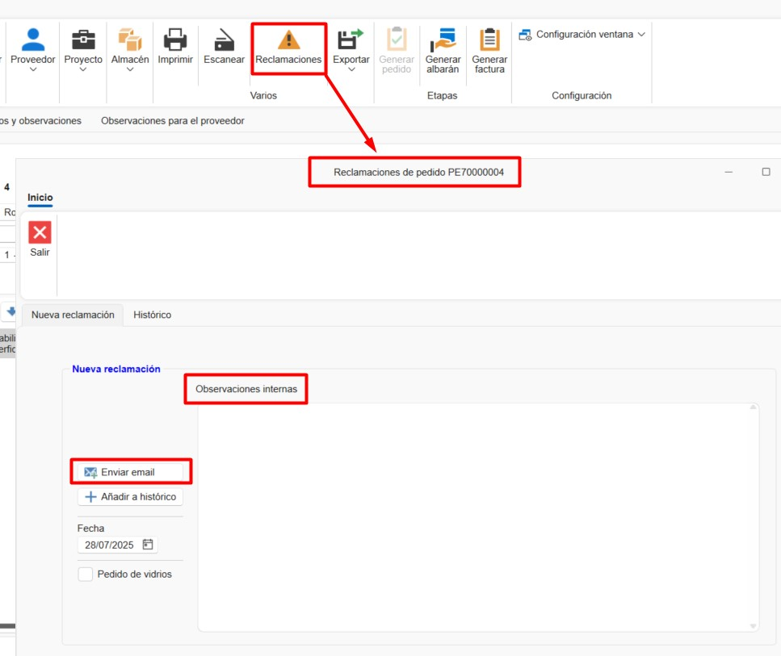
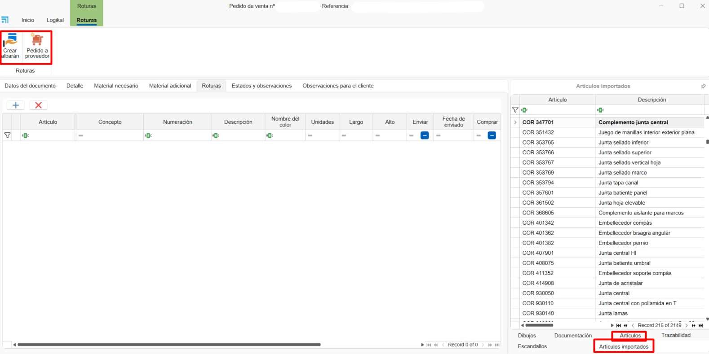

Vendite e Acquisti
1. Introduzione
Questo manuale è pensato per guidare gli utenti nell'uso del sistema vendite e acquisti di ENBLAU. Basato sulla formazione fornita, copre i processi chiave, dalla creazione di progetti alla gestione di ordini, acquisti e produzione.
2. Processo
Una volta entrati nell'area, vedrai due sezioni principali:
2.1. Vendite
- Documenti di vendita: gestione e elenco di preventivi, ordini, bolle e fatture. Creazione di progetti e clienti.

2.2. Acquisti
- Documenti di acquisto: gestione e elenco degli ordini di acquisto e della ricezione dei materiali. Creazione di fornitori.

Nota: Per creare documenti di vendita e acquisto è importante avere creato progetti, clienti e fornitori. Per maggiori informazioni, segui questo link: 4. Proyecto, cliente y proveedores.
3. Vendite
Nella sezione Vendite troverai Progetti, Documenti di vendita e Clienti.
3.1. Documenti di vendita
- Accedendo a Documenti di vendita si aprirà l'elenco di tutti i documenti relativi alle vendite.

3.1.1. Tipi di documenti
- Per creare un nuovo documento, clicca su Nuovo nella barra superiore.

- Si aprirà la finestra Nuovo documento di vendita.

- Da qui puoi creare diversi tipi di documenti di vendita, come Preventivo, Ordine, Bolla o Fattura.

- Selezionando il tipo di documento, alcuni campi saranno compilati automaticamente (Commerciale, Responsabile, Numerazione, ecc.). Questi campi sono modificabili.

- Altri campi, come Progetto e Cliente, possono essere configurati per essere compilati automaticamente in base al progetto.

- Dalla barra superiore puoi cambiare il cliente o aggiungere un nuovo cliente o progetto.

3.2. Preventivo
- Creando un nuovo preventivo si aprirà una finestra con il numero del preventivo di vendita.

3.2.1. Dati del documento
- In questa sezione è possibile visualizzare e modificare alcuni campi del preventivo.

3.2.2. Dettaglio
- Qui si aggiungono le righe per la versione del preventivo.

- Puoi aggiungere una nuova riga vuota o importarla da Logikal (assicurati di essere connesso alla fabbrica).

- Aggiungendo una riga da Logikal si aprirà la finestra di configurazione di Logikal Tipo di linea.

⚠️ Importante: per aggiungere una riga da Logikal, assicurati di essere connesso alla fabbrica.

- Una volta configurata, la riga verrà aggiunta in ENBLAU.

3.2.3. Logikal
- Da questa sezione puoi creare un progetto o collegare un progetto già creato in Logikal.

- Collegando il progetto si aprirà una finestra con i progetti disponibili in Logikal.

- Puoi creare diverse versioni del preventivo. Clicca con il tasto destro sulla scheda Versione 1 o usa il menu a tendina Preventivo nella barra superiore.


- Si aprirà la finestra Nuova versione del preventivo, dove puoi indicare se vuoi copiare le righe dalla versione attiva o creare una versione vuota.

- Per modificare una riga in Logikal, premi Ctrl + doppio clic sulla riga che desideri modificare.
Nota: il nome delle schede delle versioni è modificabile. Per cambiarlo, clicca con il tasto destro sulla scheda della versione e seleziona Cambia nome versione.
⚠️ Importante: per creare o collegare un progetto da Logikal, assicurati di essere connesso alla fabbrica.
3.3. Ordine
3.3.1. Creare un ordine
- Dopo aver creato la versione del preventivo, il passo successivo è accettarlo e creare l'ordine cliente.


3.3.2. Modificare righe
- Dall'ordine puoi modificare o aggiungere righe, elencare materiali, creare misurazioni, avviare produzioni, ecc.

3.3.3. Bolla
- Dalla fase di Ordine puoi creare una bolla e indicare le unità da bollare.

Nota: i dati del documento d'ordine possono essere modificati come in altri documenti di vendita.
3.4. Misurazione
3.4.1. Creare una misurazione
- Dall'ordine puoi creare una misurazione.

3.4.2. Selezionare righe
- Creando una misurazione si apre la finestra Nuova fase di misurazione, dove puoi selezionare le righe per la fase di misurazione.

3.4.3. Fase di misurazione
- Viene creata una fase di misurazione in cui puoi modificare le misurazioni senza influire sull'ordine.

3.4.4. Bolla
- Dalla fase di Misurazione puoi creare una bolla e indicare le unità da bollare, allo stesso modo dell'ordine.
Nota: i dati del documento di misurazione possono essere modificati come in altri documenti di vendita.
3.5. Produzione
3.5.1. Creare produzione
- La fase di produzione può essere creata dall'ordine o dalla misurazione.

3.5.2. Selezionare righe
- Creando una produzione si apre la finestra Nuova fase di produzione, dove puoi selezionare le righe per la fase di produzione.

- Accettando comparirà una finestra che chiede se desideri inviare in produzione.

3.5.3. Fase di produzione
- Viene creata una fase di produzione in cui puoi modificare la riga prima di inviare in produzione senza influire sull'ordine.

3.5.4. Bolla
- Dalla fase di Produzione puoi creare una bolla e indicare le unità da bollare, come nell'ordine.
Nota: i dati del documento di produzione possono essere modificati come in altri documenti di vendita.
4. Acquisti
4.1. Ordini di acquisto
4.1.1. Da un preventivo
- Accetta un preventivo per generare un ordine cliente.
4.1.2. Materiale necessario
- Vai alla scheda "Materiale necessario" per elencare i materiali richiesti.

- Nell'elenco materiali vedrai nelle colonne Articoli e Unità da acquistare i colori verde e rosso. Il verde indica che c'è materiale sufficiente a magazzino per quel progetto, il rosso indica carenza.
- Puoi scegliere se acquistare i materiali selezionando o deselezionando la casella nella colonna Comprar.

⚠️ Importante: per elencare i materiali da un progetto Logikal, assicurati di essere connesso alla fabbrica.
4.1.3. Generare ordine di acquisto
- Seleziona i materiali e genera l'ordine di acquisto in Pedir material. Si aprirà la finestra Nuovo documento di acquisto, dove puoi modificare alcuni campi predefiniti e scegliere il fornitore.

- Assegna un fornitore e invia l'ordine.

4.1.4. Ordine di acquisto
- Una volta creato l'ordine di acquisto puoi revisionarlo e modificarlo secondo necessità (fornitore, progetto, quantità materiali, ecc.).

4.1.5. Esportare a Cortizo center
- Dopo aver creato l'ordine di acquisto, puoi esportarlo in formato Excel per caricarlo su Cortizo center.

4.1.6. Reclami
Una volta generato un ordine di acquisto, hai la possibilità di gestire Reclami direttamente dal sistema.
- Puoi aggiungere un reclamo associato all'ordine dalla sua scheda:

- È anche possibile inviare automaticamente il reclamo via e-mail, velocizzando la comunicazione con il fornitore:

- Il sistema conserva uno storico automatico dei reclami effettuati. Inoltre, puoi aggiungere registrazioni manuali per documentare il follow-up del reclamo.

Nota: un adeguato follow-up dei reclami migliora la tracciabilità delle anomalie con i fornitori e facilita la gestione qualità negli acquisti.
4.1.7. Documenti di acquisto
- Dalla sezione Acquisti puoi accedere all'elenco degli acquisti e ai Fornitori.


4.1.8. Articoli e Articoli importati
-
Nell'ordine di acquisto, nella scheda Detalle nella barra laterale destra, troverai una sezione in fondo chiamata Artículos e Artículos importados. Questi articoli possono essere aggiunti all'ordine trascinando il materiale nell'elenco.
-
Artículos: materiali propri creati da MATERIAL.

- Artículos importados: materiali importati dai progetti di Logikal. Questi materiali vengono memorizzati e aggiornati ogni volta che si elencano materiali da "Material necesario". Sono gli stessi materiali presenti anche in Magazzino Materiales importados.

4.2. Ricezione materiali
4.2.1. Bolla di ricevimento
- Genera una bolla quando ricevi il materiale.

4.2.2. Unità ricevute
- Indica le unità ricevute nella colonna Unidades a albaranar.

5. Materiale aggiuntivo e scarti
5.1. Materiale aggiuntivo
- I materiali aggiuntivi possono essere aggiunti all'ordine, alla misurazione o alla produzione. Possono essere materiali propri creati in enMATERIALS o articoli importati da Logikal. Per ulteriori informazioni su come creare materiali propri, segui questo link: 2. Creación de materiales propios en enMATERIAL.

5.1.1. Aggiungere materiale
- Trascina materiale aggiuntivo dall'albero Articoli (materiali propri creati da enMATERIAL).

- Puoi anche trascinare da Artículos importados di Logikal.

- Aggiungi righe di testo.

- Una volta aggiunti i materiali aggiuntivi, hai l'opzione di generare un ordine di acquisto al fornitore.

- Puoi generare una bolla di spedizione per il materiale aggiuntivo.

5.1.2. Costi
- Il materiale aggiuntivo è contabilizzato come costo del progetto, ma non viene imputato nel preventivo al cliente.
5.2. Scarti
5.2.1. Aggiungere agli scarti
- Dalla sezione "Materiale necessario", fai clic con il tasto destro sul materiale e seleziona Añadir a roturas.

- Il materiale sarà aggiunto nella sezione Roturas. Nella colonna Concepto puoi indicare il motivo dello scarto, selezionando da un elenco predefinito nella configurazione di 7.5. Conceptos de roturas.

- Come per il materiale aggiuntivo, è possibile aggiungere Articoli (materiale proprio) e Articoli aggiuntivi. Inoltre si possono generare ordine di acquisto e bolla.

- Assicurati che nella sezione 8.3. Clasificaciones la classificazione per gli scarti sia configurata correttamente.
Nota: il processo di aggiunta e richiesta di materiale aggiuntivo o scarti può essere eseguito anche dalla sezione progetti.
6. Tracciabilità
6.1. Albero di tracciabilità
- Mostra la tracciabilità completa di un documento, dal preventivo alla produzione. Ad esempio, dal preventivo (es. 483) fino all'invio in produzione.

6.2. Visualizzazione
- Clicca su un documento per visualizzarne la tracciabilità nel pannello di destra.

Gestione filtri Usa i filtri e i filtri personalizzati per ottimizzare la ricerca negli elenchi. Per maggiori informazioni, segui questo link: 4. Gestión de filtros
7. Domande frequenti
7.1. Come gestire le segnalazioni post-vendita?
- Opzione 1: crea un nuovo preventivo.
- Opzione 2: genera un ordine cliente a importo zero e invialo in produzione.
7.2. Come aggiungere materiale aggiuntivo?
- Trascina il materiale aggiuntivo dall'albero e genera una bolla di spedizione.
7.3. Come ricevere materiale parzialmente?
- Generando una bolla, indica le unità ricevute. Puoi creare più bolle per lo stesso ordine.
Questo manuale è pensato per aiutarti a navigare e utilizzare il sistema vendite e acquisti di ENBLAU in modo efficiente. Per ulteriori dettagli, consulta il video di formazione o contatta il supporto tecnico.
 Español
Español
 English
English
 Italiano
Italiano
 Português
Português